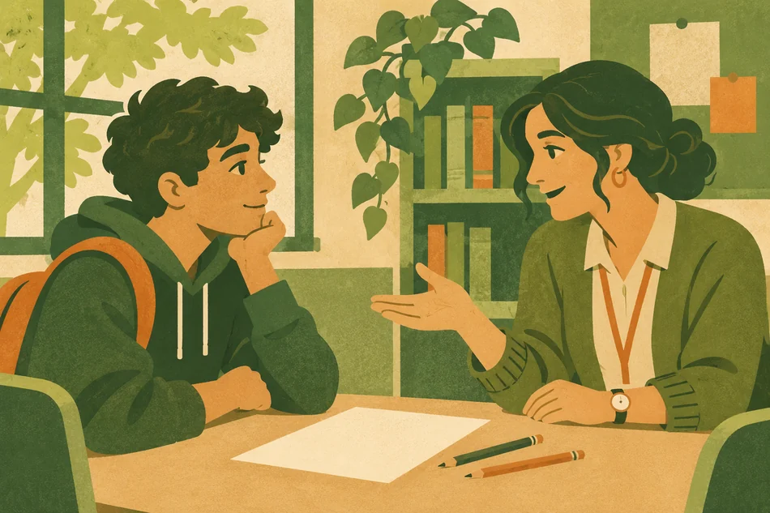
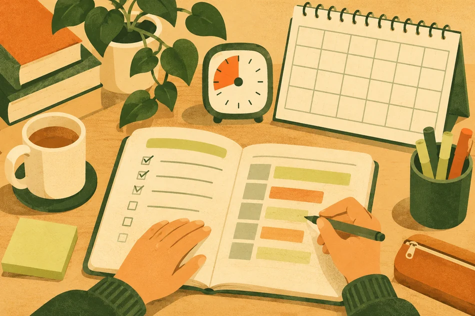
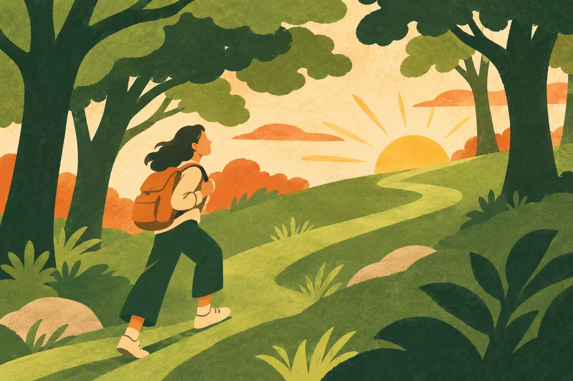

Providence Ready Blog
A direct guide for students on what to do after a bad grade, helping you stop panicking, figure out what went wrong, and make a plan to bounce back.
Read the full article (opens in a new tab)English reading project
What can you do after a bad grade? Explore five readings in easy English about getting help, rebuilding your study habits, and moving forward.
Explore the readingsSelect a card for its summary and a link to the original article.
Providence Ready Blog
A direct guide for students on what to do after a bad grade, helping you stop panicking, figure out what went wrong, and make a plan to bounce back.
Read the full article (opens in a new tab)
Magoosh Blog
Realistic steps on how to handle failing a class—from talking to your teachers and exploring credit recovery options to staying positive.
Read the full article (opens in a new tab)Talk 2 Tessa Blog
Focuses on mental exhaustion and stress, offering kind, small steps to feel unstuck and motivated again when grades start dropping.
Read the full article (opens in a new tab)
Post University Blog
Practical advice to fix bad grades: stopping procrastination, changing bad study habits, and asking teachers for extra help.
Read the full article (opens in a new tab)
Sophia Learning Blog
Explains how to stop negative self-talk, talk to advisors, and build a smart, realistic plan to pass your classes.
Read the full article (opens in a new tab)